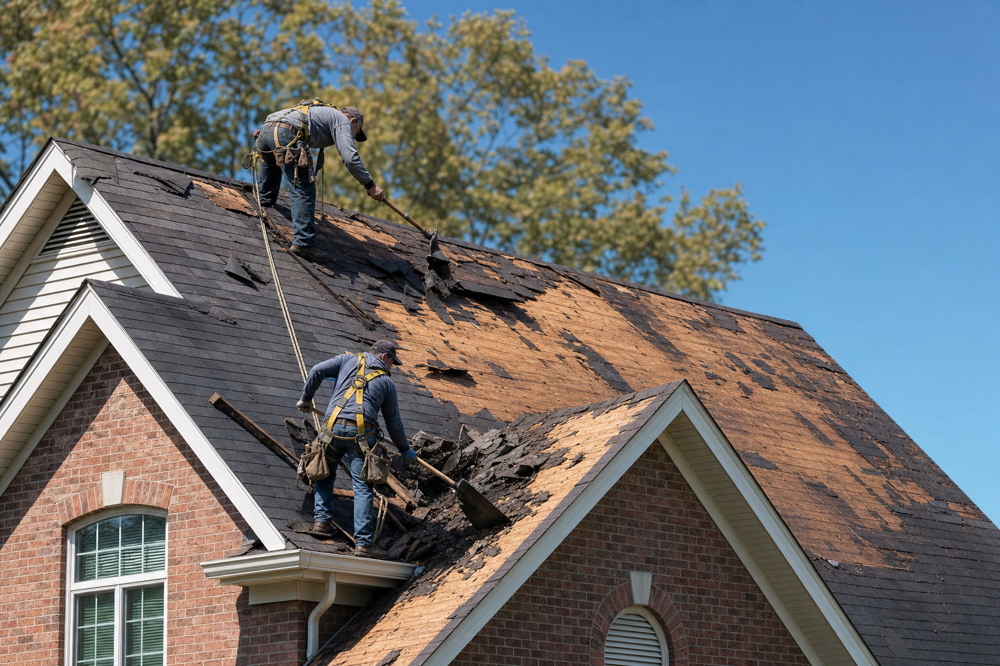
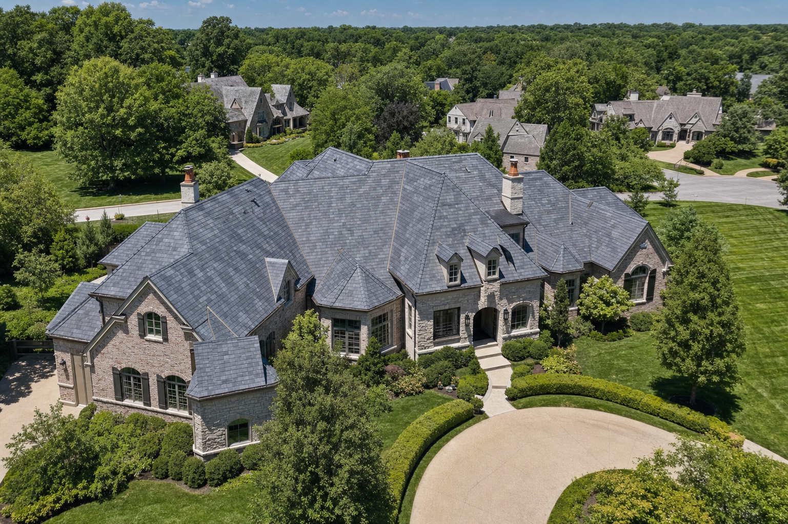
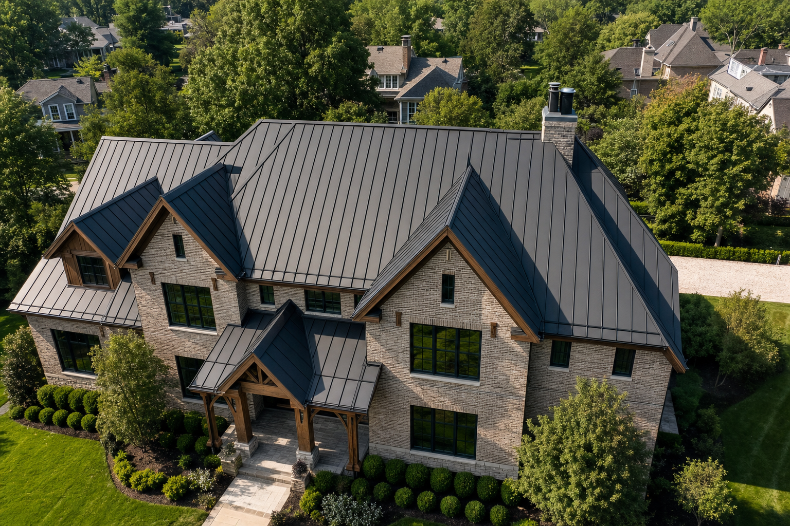

01
A complete roof system is being evaluated
The work extends beyond one isolated repair and requires a clearly defined residential roofing scope.
Residential roofing · St. Louis
Residential Roofing
Residential roofing begins with the home itself—its architecture, roof geometry, visible condition, and approved project requirements. The proposed system should bring those factors into one clear scope.

When residential roofing is appropriate
A residential roofing scope should respond to the property in front of it. These are decision points for evaluating the work—not a diagnosis of an individual home.
The work extends beyond one isolated repair and requires a clearly defined residential roofing scope.
Valleys, ridges, walls, penetrations, and adjoining materials can affect how the proposed system is defined.
The roof is a major part of the home’s exterior composition as well as a working building assembly.
The written proposal should reflect documented roof conditions and the work approved for that home.
Available materials, installation methods, schedules, and final deliverables remain subject to Oxford’s confirmed residential offering and the property’s written proposal.
Why Oxford for residential roofing
Begin with the roof geometry, exterior composition, and visible conditions that shape the project.
Bring the approved assembly, project details, and known conditions into a written residential scope.
Treat changes in plane, roof-to-wall conditions, and other critical junctions as part of the complete system.

What the residential scope considers
The final scope depends on the documented inspection and written proposal. A residential roofing project may require the following categories to be defined.
Kirkwood photography is shown as residential active-work context only. It is not identified as Ladue or Webster Groves.
The residential process
Review the property context and document visible roof conditions.
Define the proposed assembly and work sequence for customer review.
Use the accepted written scope as the reference for the roofing project.
Review the completed roof and any applicable project records.
Relevant proof of work
These project titles, locations, photography, and system metadata are already verified in Oxford’s portfolio.


Complete Oxford service territory
Oxford’s approved territory includes the following Missouri and Illinois communities.
Missouri
Missouri
Missouri
Missouri
Missouri
Missouri
Illinois
Illinois
Illinois
Our service area is always growing. If you’re in or near the greater St. Louis region, there’s a good chance Oxford Roofing can help. Contact us and we’ll confirm whether your property is within our current service area.
Residential roofing FAQ
These draft answers stay deliberately conservative pending operational review.
It can identify the documented roof condition, proposed roof assembly, project-specific transitions, and approved work. The property’s written proposal determines the actual scope.
The decision should account for documented roof conditions, roof geometry, the home’s architecture, and the options Oxford confirms for that project. Material availability requires final confirmation.
Valleys, ridges, walls, edges, and penetrations are part of how the roof functions as a complete assembly. The proposal should identify the project details included in Oxford’s work.
The services overlap, but they answer different questions. Roof Replacement focuses on when and how an existing system is replaced. Residential Roofing is the broader architectural and property context for the approved roof system.
The exact inspection, proposal, change, completion, and product records supplied by Oxford require operational confirmation and should be stated in the final written proposal.
Begin with the home
Oxford can review the visible residential roof condition and define the appropriate next step for the property. The recommendation depends on the documented assessment.
Request an Inspection